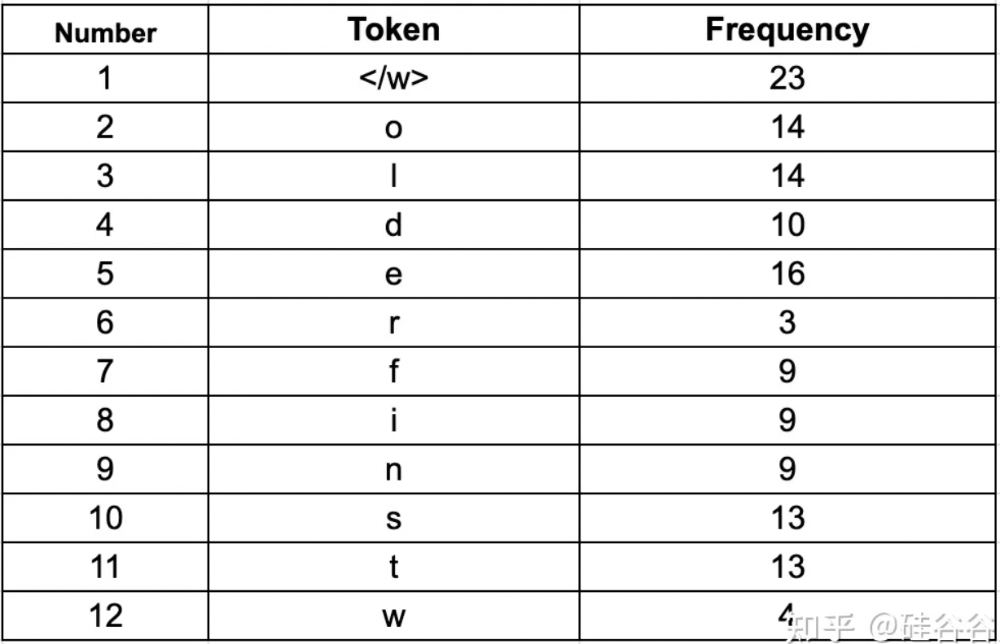
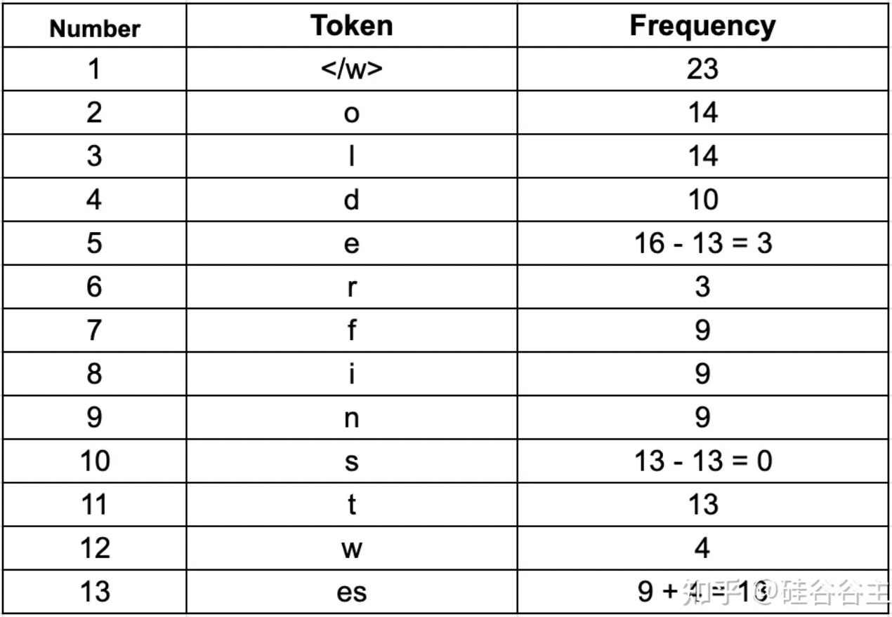
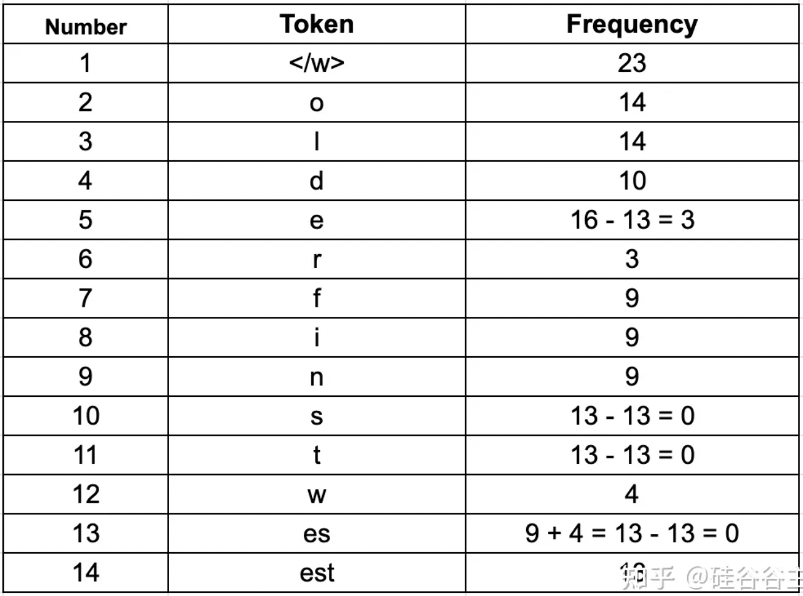
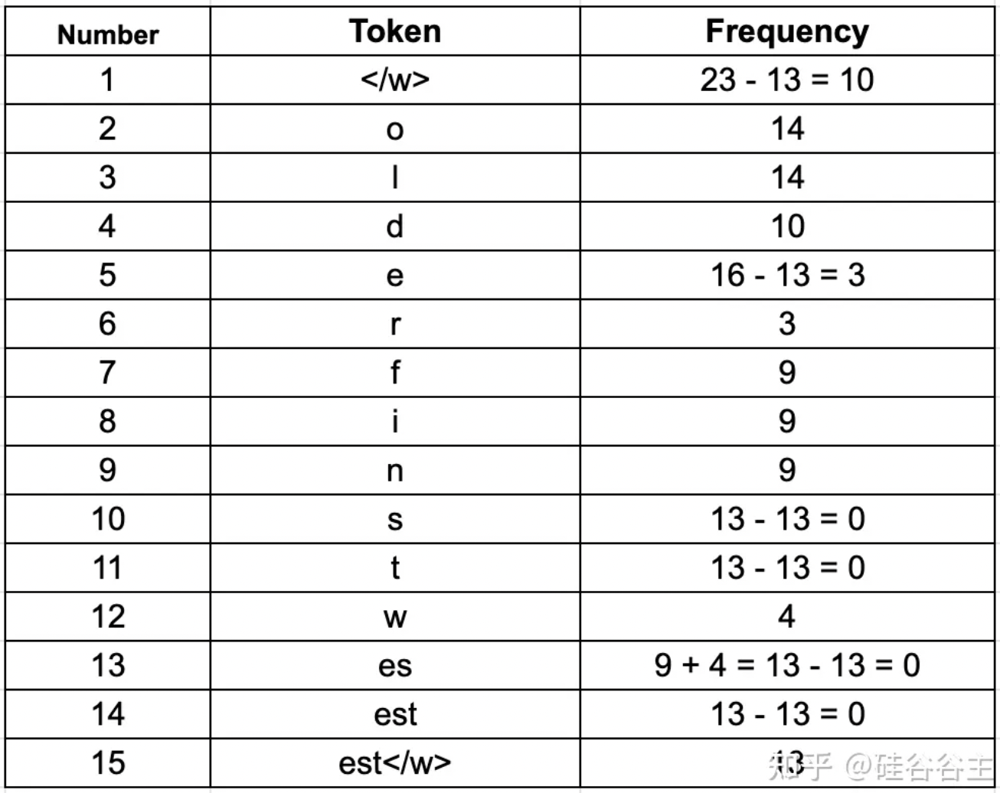
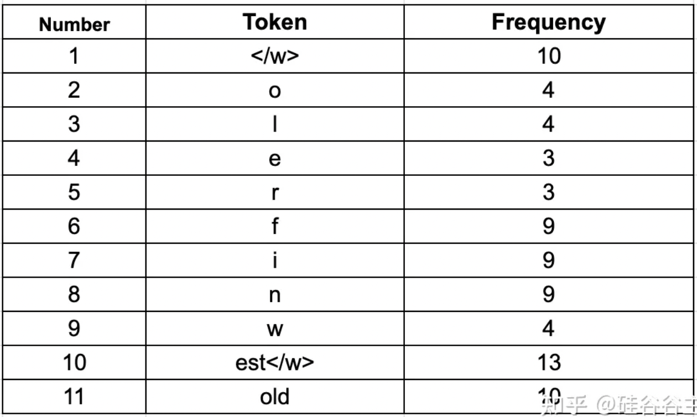

Byte Pair Encoding (BPE)#
Note
我们都了解一种最基本的tokenization, 也就是把每一个单词看成一个token，然后对其进行编号。这种编码方式十分符合人类语言习惯，因为人类语言也经常以单词为单位进行交流，但这并不一定是最合理的编码方式。
我们知道，一门语言中，通常有几万到几十万量级的单词数。若使用这种编码方式，在语言模型预测的时候需要在这个拥有几万个单词的列表上计算一个概率分布，那样的计算量是非常恐怖的，而且过大的token列表十分影响模型的预测准确度。
有一种编码方式能大大减小token list，那就是本文即将介绍的Byte Pair Encoding(BPE)，也是NLP中最重要的编码方式之一。
初识BPE#
BPE 是一种简单的数据压缩算法，它在 1994 年发表的文章“A New Algorithm for Data Compression”中被首次提出。下面的示例将解释 BPE。老规矩，我们先用一句话概括它的核心思想：
Note
BPE每一步都将最常见的一对相邻数据单位替换为该数据中没有出现过的一个新单位，反复迭代直到满足停止条件。
下面举个例子。
假设我们有需要编码（压缩）的数据 aaabdaaabac。相邻字节对（相邻数据单位在BPE中看作相邻字节对） aa 最常出现，因此我们将用一个新字节 Z 替换它。我们现在有了 ZabdZabac，其中 Z = aa。下一个常见的字节对是 ab，让我们用 Y 替换它。我们现在有 ZYdZYac，其中 Z = aa ，Y = ab。剩下的唯一字节对是 ac，它只有一个，所以我们不对它进行编码。我们可以递归地使用字节对编码将 ZY 编码为 X。我们的数据现在已转换为 XdXac，其中 X = ZY，Y = ab，Z = aa。它不能被进一步压缩，因为没有出现多次的字节对。那如何把压缩的编码复原呢？反向执行以上过程就行了。
NLP实例#
NLP 中使用了上述算法的一个变体。让我们通过一个实际的例子来了解一下它的NLP版本。
首先来明确一下基础概念：token可以理解为一个符号，就代表一个语言单位（就像单词，字符等）；tokenize的意思是把一个句子或长语料分成token。
BPE 确保最常见的词在token列表中表示为单个token，而罕见的词被分解为两个或多个subword tokens，因此BPE也是典型的基于subword的tokenization算法。
假设我们有一个语料库，其中包含单词（pre-tokenization之后）—— old, older, highest, 和 lowest，我们计算这些词在语料库中的出现频率。假设这些词出现的频率如下：
{“old”: 7, “older”: 3, “finest”: 9, “lowest”: 4}
让我们在每个单词的末尾添加一个特殊的结束标记“</w>”。
{“old</w>”: 7, “older</w>”: 3, “finest</w>”: 9, “lowest</w>”: 4}
在每个单词的末尾添加“</w>”标记以标识单词边界能够让算法知道每个单词的结束位置（因为我们统计相邻字符对时不能把分别位于两个单词中的字符对算进去），这有助于算法查看每个字符并找到频率最高的字符配对。稍后我们将看到“</w>”也能被算作字符对的一部分。
接下来，我们将每个单词拆分为字符并计算它们的出现次数。初始token将是所有字符和“</w>”标记的集合。

由于我们总共有 23 个单词，所以我们有 23 个“”token。第二高频率标记是“e”。我们总共有 12 个不同的token。
BPE 算法的下一步是寻找最频繁的字符对，合并它们，并一次又一次地执行相同的迭代，直到达到我们预先设置的token数限制或迭代限制。
合并字符可以让你用最少的token来表示语料库，这也是 BPE 算法的主要目标，即数据的压缩。为了合并，BPE 寻找最常出现的字节对。在这里，我们将字符视为与字节等价。当然，这只是英语的用法，其他语言可能有所不同。现在我们将最常见的字节对合并成一个token，并将它们添加到token列表中，并重新计算每个token出现的频率。这意味着我们的频率计数将在每个合并步骤后发生变化。我们将继续执行此合并步骤，直到达到我们预先设置的token数限制或迭代限制。
为了更清晰的理解，看完下面完整的迭代过程：
迭代 1：我们将从第二常见的标记“e”开始。 在我们的语料库中，最常见的带有“e”的字节对是“e”和“s”（在finest和lowest两个词中），它们出现了 9 + 4 = 13 次。 我们将它们合并以形成一个新的token“es”并将其频率记为 13。我们还将从单个token（“e”和“s”）中减少计数 13，从而我们知道剩余的“e”或“s”token数。 我们可以看到“s”不会单独出现，“e”出现了 3 次。 这是更新后的表格：

迭代 2：我们现在将合并token“es”和“t”，因为它们在我们的语料库中出现了 13 次。 因此，我们有一个频率为 13 的新token“est”，我们会将“es”和“t”的频率减少 13。

迭代 3：让我们现在考虑“</w>”token，我们看到字节对“est”和“</w>”在我们的语料库中出现了 13 次。
Caution
合并停止token“”非常重要。 这有助于算法理解“estimate”和“highest”等词之间的区别。 这两个词都有一个共同的“est”，但一个词在结尾有一个“est”token，一个在开头。 因此，像“est”和“est”这样的token将被不同地处理。 如果算法看到token“est”，它就会知道它是“highest”这个词的token，而不是“estate”的。

迭代 4：查看其他token，我们看到字节对“o”和“l”在我们的语料库中出现了 7 + 3 = 10 次。
迭代 5：我们现在看到字节对“ol”和“d”在我们的语料库中出现了 10 次。
现在我们发现“f”、“i”和“n”的频率为 9，但我们只有一个单词包含这些字符，因此我们没有将它们合并。 为了本文的简单起见，让我们现在停止迭代并。看看我们最终的token列表：

编码和解码#
现在让我们看看如何解码我们的示例。要解码，我们必须简单地将所有token连接在一起以获得整个单词。例如编码序列[“the</w>”,“high”,“est</w>”,“range</w>”,“in</w>”,“Seattle</w>” ]，我们将被解码为 [“the”, “highest”, “range”, “in”, “Seattle”] 而不是 [“the”, “high”, “estrange”, “in”, “Seattle”]，因为“est”中存在“</w>”token。
对新数据进行编码的过程还是比较简单的。然而，编码本身计算复杂度比较高。假设单词的序列是[“the</w>”,“highest</w>”,“range</w>”,“in</w>”,“Seattle</w>”]。我们将遍历我们在语料库中找到的所有token——从最长到最短，并尝试使用这些token替换给定单词序列中的子字符串。最终，我们将遍历所有token，并且我们的子字符串将被替换为我们token列表中已经存在的token组合。如果会留下几个子串（我们的模型在训练中没有看到的词），我们将用unknown token替换它们。
我们常用的语言模型词汇列表是很大的，但仍有可能出现不在里面的单词。在实践中，我们将tokenized好的单词保存在字典中。对于未知（新）词，我们应用上述编码方法对新词进行tokenization，并将新词的token添加到我们的token字典中以备将来用到。
是不是贪心算法？#
为了以最有效的方式构建语料库，BPE 在迭代的时候通过比较token的频率大小来穷尽每一种可能。所以，是的，它遵循一种贪婪的策略来尽可能取得最优的解决方案。
无论如何，BPE 是使用最广泛的sub-word tokenization算法之一。尽管贪婪，但它具有良好的性能！并被作为机器翻译等主流NLP任务的首选tokenize方法之一。